This tutorial is for advanced intermediate tutorials. It is a follow up to my First tutorial, and you should have read that first. You can download all my tutorials at Wolf's Reasonable Facsimile of an Unreal Site and Total Unreal.
Okay, you read my first tutorial and now you are wanting to make some more complex shapes. The wedges were nice but what about other cool items, like torch holders, computers, and things like that? This tutorial will show you how to do those, too, using the same techniques we used in the first tutorial. Also we will get into a couple advanced features of UnrealEd you may not know about.
For the purposes of this tutorial we will consider a complex shape an item that is made up of more than one shape. This tutorial will show you how to make these shapes and "convert" them to a single brush you can save and reuse. Since a good light source is essential to any level, let's make a torch holder first.
Simple Torch HolderLet's start with out basic 512 x 512 x 512 room. We are going to build our torch holder in the middle or the room. That is so when we intersect the brushes later we won't have it touching anything. Let's start with a simple shape. Right-click the cone icon and set it's properties to a height of 32 and outer radius of 64. Don't worry about any other settings. Click the build button and close the properties dialog window. You should now have a squatty little cone in the center of your room. We'll need to rotate that 180 so the point is pointing down. Go ahead and pick a texture and then ADD the cone-shape to the world. You just made the base of the torch holder (where the flame will sit). Let's make the arm that holds the base to the wall. Right-click the cube icon and bring up it's properties window. Make the cube 16(h) x 16 x 128. Now line the rectangular red brush you just made up with the base like below.
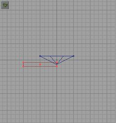
Add the rectangular brush to the world. Now, that would work fine for a torch holer, but let's be a bit more creative and detailed with it. let's add another cone. Make this one 32 high and an outer radius of 16. Now, the cone should appear pointing down, unless you reset the brush earlier. We want the cone pointing down so this is fine. Line it up as shown.
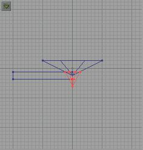
Add it to your world. Now lets make a plate that holds the arm to the wall. Make cube 32 x 32 x 16. Line it up as shown below.
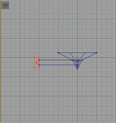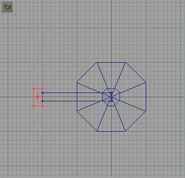
Now add it. If you have been following along you should have something like this:
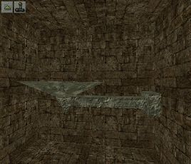
Now make the red brush big enough to totally surround the brushes that make up the torch holder. Check all views and make sure the torch holder is completely inside the red brush. Now hit the intersect button and you should have something like this:
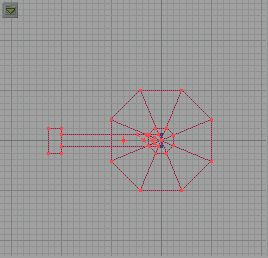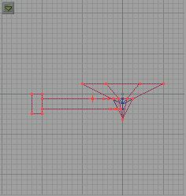
Now you can save the brush if you like. Remember: The save/load option doesn't work right, so EXPORT the brush (as a .t3d) and then IMPORT it when you want to use it again. Call it something creative like torchholder" or something. Here's a tip for you. Since we have to delete the old brushes anyway, while you've got the red brush around the parts of the torch holder, and BEFORE you intersect, hit the "Select actors inside brush" button. This should hilight all the brushes that make up our torch holder. Now Intersect. Make sure the newly shaped red brush looks correct, and then hit DEL to delete. Answer yes to confirm. Now move the red brush to a postion against the wall and add it. Rebuild the geometry. If your 3d view goes all dark, then open then under Mode on the window menu bar select TEXTURES instead of "Dynamic Lighting." There, it should be back now. Okay, let's put the flame on it. In the Browser, select classes, and then expand Light. Find the TorchFlame and click it. Now in the 3D view right click the top of the torch holder (the base, the first part we built). Make sure to not right click on the red brush. If the first option when you right click is "Brush Properties" then try again. If the first option is "Surface Properties" Then you are okay. Look down the menu at the second option. It should say "Add Torchflame here." That's exactly what we want to do, so select that. Now a torchflame should appear on your torch holder. Align it in the 2D views so that it is in the center of the holder base. Now rebuild geometry. If you switched the 3D view to "Textures" before, switch it back to "Dynamic lighting." It's still kind of dark in there so let's add another torch holder on the opposite wall. IMPORT the torch holder you saved earlier. We could have just moved the existing red brush where we wanted it, but we wanted to make sure we could import the brush back in.Once you import the brush, move it to the opposite wall and rotate it so it's a mirror image of the other torch holder. Now in the top-view 2D view highlight the torch flame. Press CTRL-W to duplicate it and then center the new torch flame over the new torch holder. Rebuild geometry again. Now add a player start, rebuild and then go test the room. I'll wait here for you. :)
The torch holders didn't show up very well, did they? Kind of high up and hard to see. Let's fix that. Start by going to the menu bar at the top and under Brush go to Reset. You shouldn't even have to click, it should automatically reset the brush and center it. Now, the red brush should still be "torch-holder-shaped" only upside down. That's okay, the next step will fix that. Right click on the brown brush that is our starting room. On the pop-up menu go to Copy Polygons...and To Brush. Yes, Copy Polygons to brush will make the red brush a "clone" of the one that is higlighted, in this case our start room. Now, in the top 2D view, move the red brush so that one side touches the existing start room and then press the Subtract Brush button (Remember before removing the red brush you need to either hit the Deselect All button or click somehwere in the 2D view so that the original room brush is no longer selected).
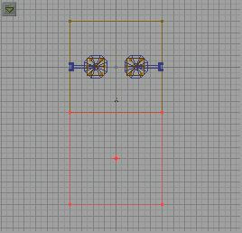
Now add a light (right click and choose "add light here") to the 3D view. In the 2D views position the light so that it is between the two torch holders, and just below them. Rebuild again and you should have something like this:
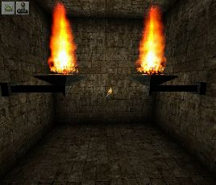
In the top 2D view move the PlayerStart icon to the far end of the new section of the room (farthest you can get it from the torches. Now rebuild and play the level again. You should now have a fairly wide, long hall with two big torch holders (with flames) at one end of the room. Walk around, looking up at the torches. The should look pretty good. But the room itself is boring. Let's try and spiff it up a bit, shall we?
Whenever you are going to make complex shapes in an existing level you will want to build them in a separate part of the level and then move them where you want them. I call this little room a Building Box. I make them big so I don't have to worry about large objects touching the walls and such when I intersect them. Let's resize our brush to 1000 x 1000 x 1000 and move it out away from our existing hall.
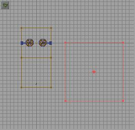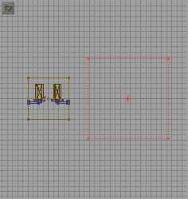
Subtract it from the world and should have a big empty room now. I usually give this room a bright texture on all sides to make things easier to see in it. You can build all your items in this room, intersect them and move the brush where ever you want it in your level before adding it. Since I never add lights to this room, I always switch the 3D view to "Textures" when working in this room. Now, to add some details to our little hall. Let's go to the building box and build something to make our little halls less boring.
I think a couple of narrow columns might be cool in there. So lets reset our red brush and then rezie it to 512 (h) x 64 x 64. You should now have a tall red rectangle in the center of your building box. Pick a nice column texture and then add the brush to the world. Now a tall slender column is pretty boring, even for this tutorial, so lets add some details to it. First select cone properties and size it to 32 height and outer radius of 64. Now line the red brush up with the bottom of the column as show.
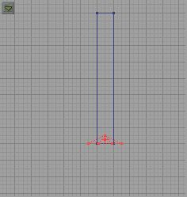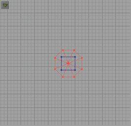
Now rotate the red brush so the cone is "upside down" and then align the cone to the top just as you did at the bottom. Add the brush. Now make your red brush big enough to completely cover the new column and intersect it. Before doing so make sure all the textures you want are on the column and aligned properly. Once intersect you have a column brush. Save it if you like (EXPORT!) and then move the red brush to our starting room. Move the column brush to any corner and hit add. Move the brush again to another corner and repeat the add. Do this until there is a column in each corner, and one in along the wall (on both sides) in the center of the room where the two halves of the room meet.
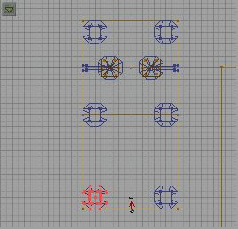
Once you have added all the columns then rebuild geometry and check it out.
Go back to the building box and delete the old brushes that made up the column. Rebuild geometry and the old brushes should vanish. Now, we need some light at the end of the hall where the player start is. We could just add a light actor there, but we would need a light source to make it seem real, so let's build another light source. We should build something different this time. Let's make some sort of floor lamp. Now, we could go to decorations and choose lamp and add that, but that would be too easy. Besides it would do nothing to show you how to make custom shapes in UnrealEd. Let's build out own!
Floor LampI can hear you saying, "Why don't we build a lamp that sits on a pedastal and has these neat metal cage things all around it?" Good idea you had there. Let's build it. We'll start off by moving to our building box. Let's build the hard part first, metal cage thingy. Now we don't want this too big and we are going to have to build it out of primitives. Let's make it out of little rectangles. We'll start with a cube so resize the cube brush to 64 x 64 x 64, select a texture and add it. Now we are gonna build some negative brushes and carve out our cage. resize the red brush so it sticks out of the sides, but doesn't touch the top or bottom. I made it 48 x 48 x 80. Line it up as follows:
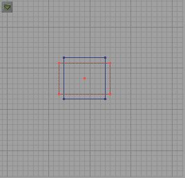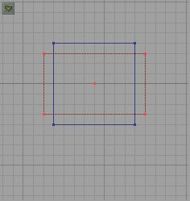
Now subtract it. That should kind of hollow out your brush. Now rotate the red brush 180 degrees and subtract again.
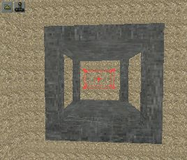
Our cage is almost done, but we should put more little "bars" in it. So resze the red brush to 48 x 8 x 8. Now postion the new red brush like this.
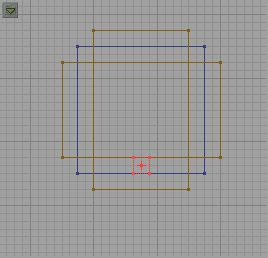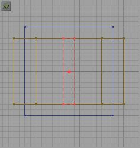
What's that you say? "Wolf, I can't line it up like that! It won't go there!" Sure it will. It doesn't want to because our grid is set to 16 and when it snaps to 16 our little 8 unit wide brush won't line up right. To fix it just reset the grid. In a 2D view simply right click anywhere on the grid. Go down to "Grid" and choose 4. Now it should go where we want it. Once you get it where you want it, add it to the world. Now move the brush to the opposite side (keeping it centered like we did the first one) and add it. Continue until you have four little "bars" in your cage. Now we have the cage built, but remember this is going to be a floor lamp, so we need a base. Let's make the red brush 64 x 32 x 32 and center it on the bottom of the cage. Now add it. Now, the base of the stand: resize the red brush to 16 x 64 x 64 and poistion it at the bottom of the stand and add it. You should have something like this:
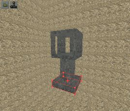
Now we simply have to build the red brush big enough to surround the new lamp, and intersect it. Move the newly lamp-shaped red brush where you want it and add it. I put mine in the center of the hall, touching the floor of course, between the PlayerStart and the second set of columns.
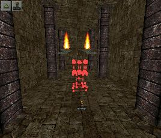
Now add a light actor right in the center of the cage part of the lamp. Now rebuild the geometry and make sure you set the 3D view back to "Dynamic Lighting." You should now have a lamp that casts some really cool shadows! "But Wolf, it doesn't look like a lamp. It just looks like a cool little cage giving off light!" Well, that's because there is nothing inside it. What we shoud do now is add a TorchFlame to the center. WOW! Much too big a flame for that little cage. Here's how we fix that. Click the TorchFlame to highlight it. Now right click it. A TorchFlame Properties window should pop up. Expand "Display" and go to DrawScale. It should be set to one now. We should make that about .2 (point 2). Now it should look better. Rebuild again. That is much better.You should have something like this:
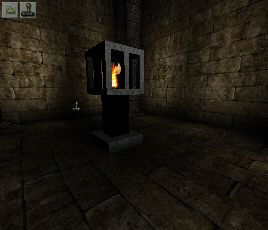